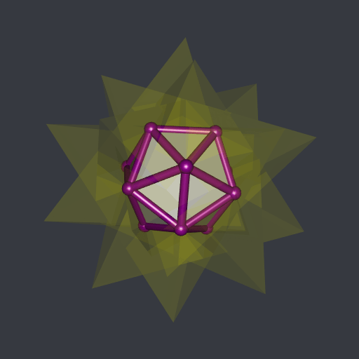
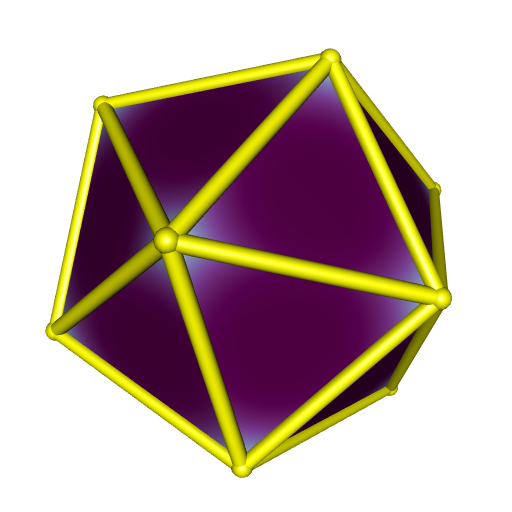

The compound of five tetrahedra
In this previous post I was wrong when I said I didn’t have a tool to compute the intersection of the compound of five tetrahedra:

This can be achieved with the help of the rcdd package in R.
This package is a wrapper of the C library cddlib. It implements the double description of convex polyhedra:
the V-description is the description by the vertices of the polyhedron;
the H-description is the description by a set of linear inequalities.
Once we get the H-description of two or more polyhedra, it is straightforward to get the H-description of their intersection: it suffices to join all the linear inequalities. Then, cddlib will give us the corresponding V-representation. That’s it.
The cddlib library is also usable in Python, with the pycddlib library. I’m going to show how to compute the intersection of the five tetrahedra forming the compound with R and with Python.
The R way
Here are the vertices of the five tetrahedra:
# the twenty vertices ####
phi <- (1 + sqrt(5)) / 2
a <- 1 / sqrt(3)
b <- a / phi
c <- a * phi
vertices <- rbind(
c( a, a, a),
c( a, a, -a),
c( a, -a, a),
c(-a, -a, a),
c(-a, a, -a),
c(-a, a, a),
c( 0, b, -c),
c( 0, -b, -c),
c( 0, -b, c),
c( c, 0, -b),
c(-c, 0, -b),
c(-c, 0, b),
c( b, c, 0),
c( b, -c, 0),
c(-b, -c, 0),
c(-b, c, 0),
c( 0, b, c),
c( a, -a, -a),
c( c, 0, b),
c(-a, -a, -a)
)
# the five tetrahedra ####
th1 <- vertices[c(17L, 14L, 2L, 11L), ]
th2 <- vertices[c(18L, 1L, 4L, 5L), ]
th3 <- vertices[c(19L, 6L, 15L, 7L), ]
th4 <- vertices[c( 3L, 13L, 12L, 8L), ]
th5 <- vertices[c(20L, 16L, 10L, 9L), ]To make a V-description with rcdd, one uses the function makeV:
library(rcdd)
V1 <- makeV(th1)
V2 <- makeV(th2)
V3 <- makeV(th3)
V4 <- makeV(th4)
V5 <- makeV(th5)Let’s look at a V-description in R:
V1
## [,1] [,2] [,3] [,4] [,5]
## [1,] 0 1 0.0000000 0.3568221 0.9341724
## [2,] 0 1 0.3568221 -0.9341724 0.0000000
## [3,] 0 1 0.5773503 0.5773503 -0.5773503
## [4,] 0 1 -0.9341724 0.0000000 -0.3568221
## attr(,"representation")
## [1] "V"Each row starts with a zero and a one, followed by the coordinates of the vertex. I don’t remember what the zero means. The one means that the subsequent numbers represent a vertex (it is also possible to encode rays and lines in a V-description).
Now we get the H-representations with the help of the scdd function:
H1 <- scdd(V1)
H2 <- scdd(V2)
H3 <- scdd(V3)
H4 <- scdd(V4)
H5 <- scdd(V5)Let’s look at a H-description:
H1
## $output
## [,1] [,2] [,3] [,4] [,5]
## [1,] 0 1 -2.802517e+00 -2.220446e-16 -1.070466e+00
## [2,] 0 1 -8.881784e-16 1.070466e+00 2.802517e+00
## [3,] 0 1 1.070466e+00 -2.802517e+00 9.614813e-17
## [4,] 0 1 1.732051e+00 1.732051e+00 -1.732051e+00
## attr(,"representation")
## [1] "H"In the first column, a zero indicates that the corresponding rows represents an inequality. The number in the second column is the right hand side of the inequality, and the subsequent three numbers are the coefficients of the linear inequality.
Now, let’s join all the linear inequalities. That is, we stack the five matrices:
H <- rbind(H1$output, H2$output, H3$output, H4$output, H5$output)The scdd function converts from the V-representation to the H-representation and vice-versa. Hence we get the vertices of the intersection by applying this function to the above H-representation:
(V <- scdd(H) )## $output
## [,1] [,2] [,3] [,4] [,5]
## [1,] 0 1 -2.205282e-01 -8.212094e-16 3.568221e-01
## [2,] 0 1 4.240675e-16 -3.568221e-01 2.205282e-01
## [3,] 0 1 5.654233e-16 3.568221e-01 2.205282e-01
## [4,] 0 1 2.205282e-01 0.000000e+00 3.568221e-01
## [5,] 0 1 3.568221e-01 -2.205282e-01 4.574370e-17
## [6,] 0 1 3.568221e-01 2.205282e-01 -4.574370e-17
## [7,] 0 1 2.205282e-01 3.202059e-16 -3.568221e-01
## [8,] 0 1 1.017762e-15 3.568221e-01 -2.205282e-01
## [9,] 0 1 6.785079e-16 -3.568221e-01 -2.205282e-01
## [10,] 0 1 -2.205282e-01 -5.010035e-16 -3.568221e-01
## [11,] 0 1 -3.568221e-01 2.205282e-01 2.795606e-16
## [12,] 0 1 -3.568221e-01 -2.205282e-01 -9.718761e-17
## attr(,"representation")
## [1] "V"The vertices are given in the last three columns. Let’s extract them:
vertices <- V$output[, c(3L, 4L, 5L)]There are twelve vertices. The intersection is a regular icosahedron. Now we will plot it. First, we compute the convex hull of these vertices with the cxhull package. The icosahedron is convex, so its convex hull is itself. But cxhull also provides the faces and the edges that are used for plotting.
library(cxhull)
icosahedron <- cxhull(vertices, triangulate = TRUE)There’s a convenient function in cxhull to plot a convec hull with rgl, namely plotConvexHull3d:
library(rgl)
open3d(windowRect = c(50, 50, 562, 562))
view3d(10, 80, zoom = 0.7)
plotConvexHull3d(
icosahedron, palette = hcl.colors(256, "BuPu"), bias = 0.25,
edgesColor = "yellow", tubesRadius = 0.06, spheresRadius = 0.08
)
The Python way
Here is the Python code computing the intersection of the five tetrahedra:
import numpy as np
import cdd as cdd
# the twenty vertices
phi = (1 + np.sqrt(5)) / 2
a = 1 / np.sqrt(3)
b = a / phi
c = a * phi
vertices = np.vstack(
(
np.array([a, a, a]),
np.array([a, a, -a]),
np.array([a, -a, a]),
np.array([-a, -a, a]),
np.array([-a, a, -a]),
np.array([-a, a, a]),
np.array([0, b, -c]),
np.array([0, -b, -c]),
np.array([0, -b, c]),
np.array([c, 0, -b]),
np.array([-c, 0, -b]),
np.array([-c, 0, b]),
np.array([b, c, 0]),
np.array([b, -c, 0]),
np.array([-b, -c, 0]),
np.array([-b, c, 0]),
np.array([0, b, c]),
np.array([a, -a, -a]),
np.array([c, 0, b]),
np.array([-a, -a, -a]),
)
)
# tetrahedra vertices
tetra1Idxs = [16, 13, 1, 10]
tetra2Idxs = [17, 0, 3, 4]
tetra3Idxs = [18, 5, 14, 6]
tetra4Idxs = [2, 12, 11, 7]
tetra5Idxs = [19, 15, 9, 8]
th1 = vertices[tetra1Idxs, :]
th2 = vertices[tetra2Idxs, :]
th3 = vertices[tetra3Idxs, :]
th4 = vertices[tetra4Idxs, :]
th5 = vertices[tetra5Idxs, :]
# make the V-representation of each tetrahedron; you have to prepend the
# vertices array with a column of ones
v = np.column_stack((np.ones(4), th1))
mat = cdd.Matrix(v, number_type='float')
mat.rep_type = cdd.RepType.GENERATOR
poly1 = cdd.Polyhedron(mat)
v = np.column_stack((np.ones(4), th2))
mat = cdd.Matrix(v, number_type='float')
mat.rep_type = cdd.RepType.GENERATOR
poly2 = cdd.Polyhedron(mat)
v = np.column_stack((np.ones(4), th3))
mat = cdd.Matrix(v, number_type='float')
mat.rep_type = cdd.RepType.GENERATOR
poly3 = cdd.Polyhedron(mat)
v = np.column_stack((np.ones(4), th4))
mat = cdd.Matrix(v, number_type='float')
mat.rep_type = cdd.RepType.GENERATOR
poly4 = cdd.Polyhedron(mat)
v = np.column_stack((np.ones(4), th5))
mat = cdd.Matrix(v, number_type='float')
mat.rep_type = cdd.RepType.GENERATOR
poly5 = cdd.Polyhedron(mat)
# H-representations of the tetrahedra
h1 = poly1.get_inequalities()
h2 = poly2.get_inequalities()
h3 = poly3.get_inequalities()
h4 = poly4.get_inequalities()
h5 = poly5.get_inequalities()
# join the five sets of linear inequalities; this will give the intersection
hintersection = np.vstack((h1, h2, h3, h4, h5))
# make the V-representation of the intersection
mat = cdd.Matrix(hintersection, number_type='float')
mat.rep_type = cdd.RepType.INEQUALITY
polyintersection = cdd.Polyhedron(mat)
# get the vertices; they are given in a matrix prepended by a column of ones
vintersection = polyintersection.get_generators()
# get rid of the column of ones
n_inequalities = vintersection.row_size
intersection = np.array([
vintersection[i][1:4] for i in range(n_inequalities)
])Results are the same as the ones we got with R:
array([[-2.20528179e-01, -8.21209393e-16, 3.56822090e-01],
[ 4.24067460e-16, -3.56822090e-01, 2.20528179e-01],
[ 5.65423280e-16, 3.56822090e-01, 2.20528179e-01],
[ 2.20528179e-01, 0.00000000e+00, 3.56822090e-01],
[ 3.56822090e-01, -2.20528179e-01, 4.57437043e-17],
[ 3.56822090e-01, 2.20528179e-01, -4.57437043e-17],
[ 2.20528179e-01, 3.20205930e-16, -3.56822090e-01],
[ 1.01776190e-15, 3.56822090e-01, -2.20528179e-01],
[ 6.78507937e-16, -3.56822090e-01, -2.20528179e-01],
[-2.20528179e-01, -5.01003463e-16, -3.56822090e-01],
[-3.56822090e-01, 2.20528179e-01, 2.79560644e-16],
[-3.56822090e-01, -2.20528179e-01, -9.71876138e-17]])It is possible to get the edges of the polyhedron with pycddlib; see how I did in this post. And to get the convex hull with its faces, one can use scipy.spatial.ConvexHull(intersection).